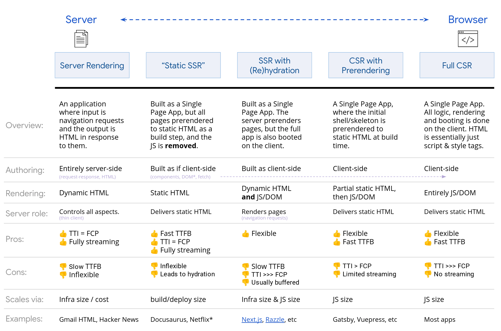

Gatsby-Image: More Than Meets the Eye

About Me
Full Stack Developer at Fresh Consulting
Gatsby Basics
Static Site Generation
Benefits compared to SPA:
Faster TTI (Time to Interactive)
Better SEO
Rendering on the Web
https://developers.google.com/web/updates/2019/02/rendering-on-the-web


gatsby-image
Installing
Default gatsby new from the cli does this all by default. It even has an example preloaded image using the “blur up” technique.
yarn add gatsby-image gatsby-transformer-sharp gatsby-plugin-sharpConfig
Once again the default gatsby new has this covered.
Usage
import React from "react"
import { graphql } from "gatsby"
import Img from "gatsby-image"
export default ({ data }) => (
<div>
<h1>Hello gatsby-image</h1>
<Img fixed={data.image.childImageSharp.fixed} />
</div>
)
export const query = graphql`
query {
image: file(relativePath: { eq: "gatsby-astronaut.png" }) {
childImageSharp {
fixed(width: 125, height: 125) {
...GatsbyImageSharpFixed
}
}
}
}
`Usage: PageQuery
Caveats
Two types of responsive images supported
- Images that have a fixed width and height
- Images that stretch across a fluid container
External Providers
Besides local, (using Sharp.js), you can use external asset providers:
Polyfilling object-fit/object-position for IE
If you’d like to include a polyfill for the object-fit/object-position CSS properties (which aren’t supported by default in Internet Explorer), import from
gatsby-image/withIEPolyfillinstead.
Art Directed Images
export default ({ data }) => {
// Set up the array of image data and `media` keys.
// You can have as many entries as you'd like.
const sources = [
data.mobileImage.childImageSharp.fluid,
{
...data.desktopImage.childImageSharp.fluid,
media: `(min-width: 768px)`,
},
]
return (
<div>
<h1>Hello art-directed gatsby-image</h1>
<Img fluid={sources} />
</div>
)
}A Few More Caveats
https://www.gatsbyjs.org/packages/gatsby-image/#some-other-stuff-to-be-aware-of
Using display: none;
If you want to set
display: none;on a component using afixedprop, you need to also pass in to the style prop{ display: 'inherit' }.
SEO Concerns When Making Changes
Be aware that from a SEO perspective it is advisable not to change the image parameters lightheartedly once the website has been published. … As a result, the image could appear on the image SERP as [a] “new” one.
Loading
By default, images don’t load until JavaScript is loaded.
Images marked as
criticalwill start loading immediately as the DOM is parsed, but unlessfadeInis set tofalse, the transition from placeholder to final image will not occur until after the component is mounted.
No GIFs
Gifs can’t be resized the same way as pngs and jpegs, unfortunately — if you try to use a gif with gatsby-image, it won’t work. For now, the best workaround is to import the gif directly.
Lazy-loading
Lazy loading behavior is dependent on
IntersectionObserverwhich is not available in IE. A polyfill is recommended.
gatsby-background-image
It has all the advantages of gatsby-image, including the “blur-up” technique or a ”traced placeholder” SVG to show a preview of the image while it loads
plus being usable as a container (no more hacks with extra wrappers),
plus being able to work with multiple stacked background images.
Extra Transforms

Traced SVG
Traced SVG: Install and Config
Included with gatsby-image
usage:
SQIP
https://github.com/gatsbyjs/gatsby/tree/master/packages/gatsby-transformer-sqip#readme
SQIP: Install and Config
Run:
yarn add gatsby-transformer-sharp
and add gatsby-transformer-sharp it to your gatsby-config.js
SQIP: Usage
Demo
Success!!

Wrapping Up

Citations
- https://www.gatsbyjs.org/packages/gatsby-image/
- https://jmperezperez.com/svg-placeholders/
- https://engineering.fb.com/android/the-technology-behind-preview-photos/